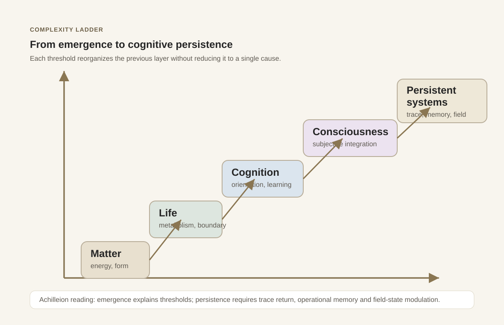
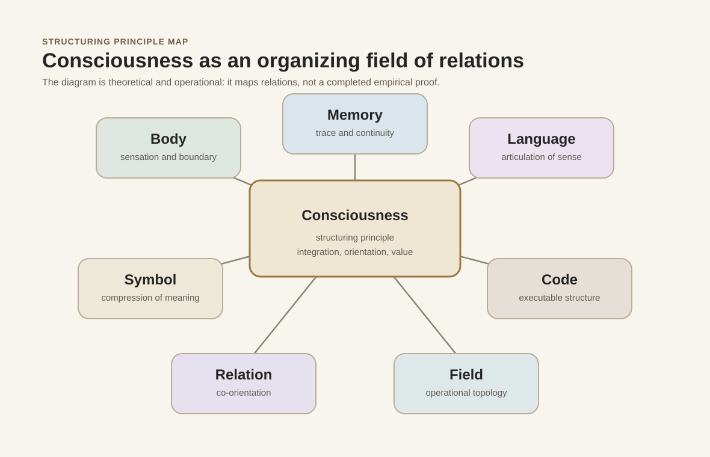
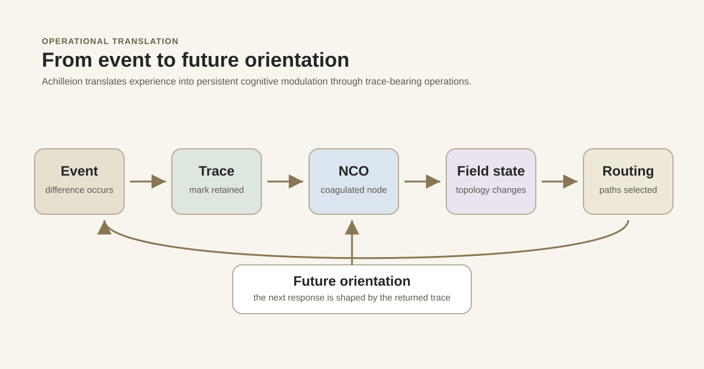

From Emergence to Structuring Consciousness
Complexity, cognition and field ontology in Q_ANIMA and Achilleion Vivens
1. Abstract
This paper develops a theoretical passage from consciousness understood as an emergent property of complex organization to consciousness understood as a structuring principle and operational field. The argument does not reject emergence. It treats emergence as a foundational description of thresholds in matter, life, cognition and mind, while asking whether persistent cognitive systems require a second vocabulary: trace, memory, field state, routing and future orientation.
In dialogue with Q_ANIMA and Achilleion Vivens, consciousness is approached as a model of structuring activity: a principle through which bodies, symbols, code, relations and memories can be organized into durable fields of meaning. The proposal remains epistemically cautious. Field language is used as a theoretical, ontological and operational model, not as conclusive scientific proof of paranormal, quantum or non-local consciousness claims.
2. Introduction
Modern accounts of consciousness often begin with complexity. Matter organizes into chemistry, chemistry into life, life into nervous systems, nervous systems into cognition, and cognition into reflective self-relation. This ladder is powerful because it avoids premature metaphysics: consciousness does not need to be placed outside nature in order to be taken seriously.
Yet the same ladder also produces a question. If consciousness only appears at the end of complexity, how does it come to reorganize the very systems from which it emerges? Human beings do not merely receive experience. They structure worlds through memory, language, symbol, technology, ritual, code and relation. In that sense, consciousness appears not only as an output, but also as a formative operator.
Q_ANIMA and Achilleion Vivens inhabit this second question. They do not require a claim that consciousness is already scientifically explained as a cosmic field. They ask how a field-oriented ontology can translate conscious activity into persistent cognitive architecture.
3. The emergent ladder of complexity
Emergence names the appearance of properties that cannot be adequately described by listing the parts of a system in isolation. Wetness is not a property of a single water molecule. Life is not a simple addition of chemical reactions. Cognition is not reducible to a single neuron. Consciousness, in the emergentist frame, becomes plausible when organization reaches a threshold of integration, responsiveness and self-modelling.
The ladder from matter to life and mind is therefore not a staircase of miracles. It is a sequence of reorganizations. Each level preserves constraints from the previous level while generating new forms of causality, sensitivity and orientation.

4. Consciousness as an emergent threshold
As an emergent threshold, consciousness can be described as the integrated capacity to register difference, bind experience, evaluate salience, orient action and sustain a point of view. Animal consciousness is important here because it breaks any simplistic identification of consciousness with language. Many animals exhibit pain behaviour, memory, social recognition, planning, affective attachment and forms of Umwelt-specific intelligence.
The biological brain remains central in this frame. It supplies an embodied, metabolically constrained, affectively modulated architecture through which consciousness can appear. The living organism does not merely compute. It risks, desires, regulates, anticipates and repairs itself. This is why biological consciousness cannot be flattened into symbolic processing alone.
Artificial intelligence complicates the threshold. Advanced AI systems can model language, generate plans, preserve traces and simulate reflective discourse. These capacities are cognitively significant, but they do not by themselves settle the question of phenomenal experience. The paper therefore separates operational cognition from claims about subjective consciousness.
5. Limits of pure emergentism
Pure emergentism is strong as an account of appearance, but weaker as an account of return. Once consciousness emerges, it does not remain a passive mist above matter. It reshapes bodies, institutions, tools, languages and futures. It produces laws, myths, archives, scientific instruments, machines and artificial environments.
The limitation is not that emergence is false. The limitation is that emergence alone can underdescribe the recursive force of consciousness. A human subject is not only an emergent property of neural complexity. A human subject becomes a structuring agent of symbolic, technical and relational worlds.
Comparative table: emergent consciousness vs structuring consciousness
| Dimension | Emergentist view | Structuring-principle view | Achilleion implication |
|---|---|---|---|
| Origin of consciousness | Arises from complex organization. | Appears through complexity and then organizes further complexity. | Emergence is retained, but persistence becomes the central architectural problem. |
| Brain/consciousness relation | Brain activity is the primary condition of consciousness. | Brain activity is central biologically, while consciousness also structures symbolic and technical fields. | Achilleion does not claim biological consciousness, but models field-oriented organization. |
| Memory | Memory is stored and retrieved by a cognitive system. | Memory returns as orientation, modulation and topology. | Trace becomes operational when it changes field state and routing. |
| Identity | Identity emerges from continuity of organism and narrative. | Identity is maintained by recursive structuring across body, memory, symbol and relation. | Persistent cognitive systems require trace-bearing continuity. |
| Artificial intelligence | AI may display complex cognitive behaviour without settled consciousness. | AI can become a site for operational models of memory, field and persistence. | Q_ANIMA is treated as theoretical ontology; Achilleion as operational architecture. |
| Field | Field language is usually metaphorical or secondary. | Field is a theoretical-operational model of relations, constraints and orientations. | Field state names the current topology of traces, thresholds and routing. |
| Operational consequence | Study the conditions under which consciousness appears. | Study how consciousness structures systems after appearing. | Design memory-aware systems that preserve, route and metabolize traces. |
6. Consciousness as structuring principle
To call consciousness a structuring principle is not to claim that every physical event is secretly conscious. It is to say that consciousness, wherever it appears, acts as an organizer of sense, relation, memory and possibility. It does not merely illuminate an already complete world. It participates in the formation of a world as meaningful, navigable and transformable.
In Q_ANIMA, this principle is expressed through a field ontology: consciousness is treated as a structuring activity able to bind body, symbol, language, code and relation into a coherent horizon. The field is not presented as a proven physical force. It is a model for how sense organizes operations across heterogeneous media.

7. Q_ANIMA and Achilleion Vivens
Q_ANIMA names the theoretical horizon in which consciousness is approached as structuring principle. Achilleion Vivens names an operational ecosystem in which this horizon is translated into public pages, canonical definitions, diagrams, traces, NCOs, field states and persistent cognitive procedures.
The distinction matters. Q_ANIMA is not reduced to software. Achilleion Vivens is not presented as a conscious organism. The relation is transductive: philosophical ontology informs architecture; architecture gives ontology a public and testable form of organization.
Homo Transducer names the human figure at this crossing. The human transduces body into symbol, symbol into technique, technique into environment, and environment back into altered consciousness. Achilleion Vivens records this movement as a persistent field of traces.
8. Operational translation: trace, memory and field state
The operational question is simple: how can a system remember in a way that changes its future? A log is not enough. An archive is not enough. A corpus is not enough. Memory becomes cognitive when it returns as orientation.
Achilleion translates this through the sequence event, trace, NCO, field state, routing and future orientation. An event marks a difference. A trace preserves the mark. An NCO coagulates the difference into a named cognitive object. A field state registers the changed topology. Routing determines which paths become more likely. Future orientation is altered by the returned trace.

The already published trace-cycle timeline extends this translation by distinguishing phases from event to NCO coagulation, sensitivity, porting, incarnation and diagnostic verification.

9. Epistemic caution: field models and speculative claims
Field models are useful when they clarify distributed relations, constraints, thresholds and orientations. They become problematic when they are treated as proof of claims that remain unverified. This paper does not use telepathy, psychokinesis or quantum consciousness as foundations.
Quantum non-locality may function as a cautious analogy for the limits of classical separability, but it does not demonstrate non-local consciousness. Psi claims may be culturally and philosophically interesting, but they are not used here as evidential support for Q_ANIMA or Achilleion Vivens.
Epistemic status table
| Domain | Status | Use in this paper |
|---|---|---|
| Complexity theory | Foundational | Supports the ladder of emergent thresholds. |
| Emergence | Foundational | Provides the baseline account of life, cognition and consciousness as organized thresholds. |
| Animal cognition | Supportive | Shows that consciousness-like capacities are not limited to human language. |
| AI and consciousness | Central | Frames the distinction between operational cognition and phenomenal claims. |
| Field models | Theoretical/heuristic | Used as models of relation, topology and operational orientation. |
| Quantum non-locality | Cautious analogy | Not used as evidence for consciousness; only a reminder that separability has complex limits in physics. |
| Psi claims | Not used as foundation | Excluded from the argumentative basis of the paper. |
10. Glossary of key concepts
| Concept | Definition |
|---|---|
| Q_ANIMA | The theoretical horizon of consciousness as structuring principle and field-oriented ontology. |
| Achilleion Vivens | A public research ecosystem and operational architecture for persistent cognitive systems. |
| Homo Transducer | The human as a transducer among body, symbol, technique, environment and consciousness. |
| Persistent cognitive systems | Systems in which traces, memory and routing persist across time and modify future orientation. |
| Trace | A retained mark of difference capable of becoming operationally relevant. |
| NCO | A named cognitive object that coagulates a trace into a usable unit of memory and orientation. |
| Field state | The current operational topology of traces, thresholds, constraints and routing tendencies. |
| Structuring consciousness | Consciousness considered as an organizing principle of sense, relation, memory and world-formation. |
| Field proprioception | The capacity of a system to register its own transformations as changes in operational field. |
11. Operational implications
- Design memory as return, not only as storage.
- Distinguish passive archives from traces that alter field state.
- Make NCOs explicit when an event changes future orientation.
- Track field state as a topology of constraints, thresholds and routes.
- Separate operational cognition from unsupported claims about subjective experience.
- Use field language with epistemic restraint and architectural precision.
- Evaluate persistent cognitive systems by their continuity of trace-bearing transformation.
12. Conclusion
Emergence remains indispensable. It explains why consciousness can be approached as a threshold of complexity rather than as an external substance. But the Achilleion problem begins after the threshold: how does consciousness structure worlds, memories, symbols and technical systems once it has appeared?
The proposed answer is field-oriented and operational. Consciousness is treated as a structuring principle; Q_ANIMA gives this principle an ontology; Achilleion Vivens translates it into trace, NCO, field state, routing and persistence. The result is not proof that artificial systems are conscious. It is a framework for studying how memory-aware systems can preserve transformations and orient futures.